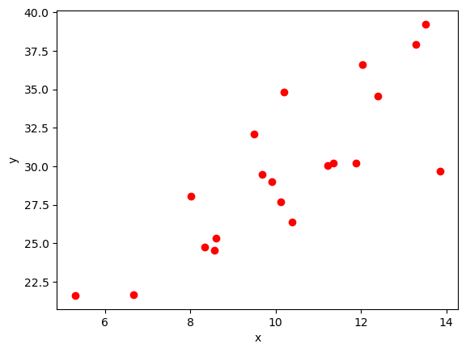
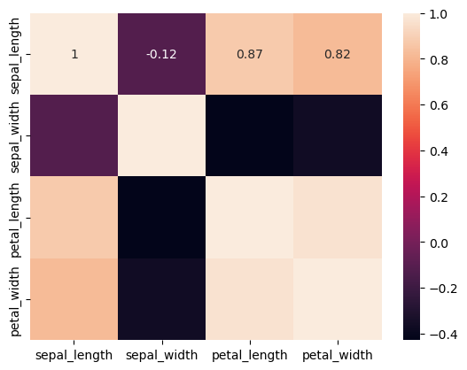
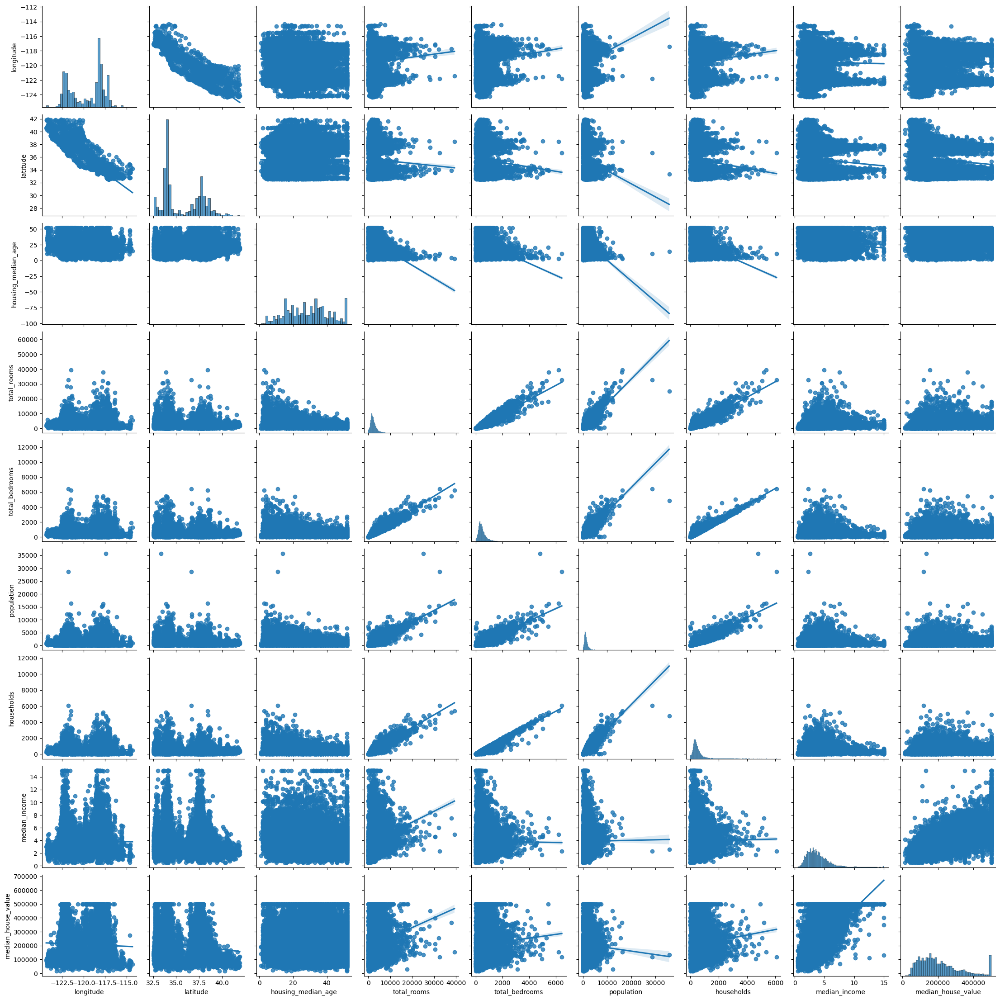
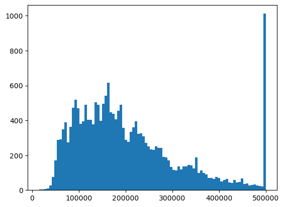

import numpy as np
from scipy import stats
import matplotlib.pyplot as plt
import seaborn as sb
import pandas as pd\[ cov[x,y]=\frac{1}{n}\sum_{i=1}^n (x_i - \mu_x)(y_i - \mu_y) \]
\[ \rho = \frac{cov[x,y]}{\sigma_x \sigma_y} \]
np.random.seed(145) # fijar una semilla para reproducir los resultados
x = np.random.normal(10,2,20)
y = 2*x + np.random.normal(10,3,20)plt.scatter(x,y,c='red')
plt.xlabel('x')
plt.ylabel('y')Text(0, 0.5, 'y')
def cov(x,y):
n = len(x)
mean_x = np.mean(x)
mean_y = np.mean(y)
return np.sum((x-mean_x)*(y-mean_y)) * (1/(n-1))
cov(x,y)9.300765888419196np.cov(x,y)array([[ 5.17027578, 9.30076589],
[ 9.30076589, 25.30850725]])np.var(x,ddof=1) # ddof = 1: para la muestra, ddof=0 para poblacion5.170275778561246np.var(y,ddof=1)25.30850725235698std_x = np.sqrt(cov(x,x))
std_y = np.sqrt(cov(y,y))
rho = cov(x,y) / (std_x * std_y)
rho0.813071228491848np.corrcoef(x,y,ddof=1) # para muestra ddof=1/tmp/ipykernel_1869422/1296909308.py:1: DeprecationWarning: bias and ddof have no effect and are deprecated
np.corrcoef(x,y,ddof=1) # para muestra ddof=1array([[1. , 0.81307123],
[0.81307123, 1. ]])iris = sb.load_dataset('iris')
iris| sepal_length | sepal_width | petal_length | petal_width | species | |
|---|---|---|---|---|---|
| 0 | 5.1 | 3.5 | 1.4 | 0.2 | setosa |
| 1 | 4.9 | 3.0 | 1.4 | 0.2 | setosa |
| 2 | 4.7 | 3.2 | 1.3 | 0.2 | setosa |
| 3 | 4.6 | 3.1 | 1.5 | 0.2 | setosa |
| 4 | 5.0 | 3.6 | 1.4 | 0.2 | setosa |
| ... | ... | ... | ... | ... | ... |
| 145 | 6.7 | 3.0 | 5.2 | 2.3 | virginica |
| 146 | 6.3 | 2.5 | 5.0 | 1.9 | virginica |
| 147 | 6.5 | 3.0 | 5.2 | 2.0 | virginica |
| 148 | 6.2 | 3.4 | 5.4 | 2.3 | virginica |
| 149 | 5.9 | 3.0 | 5.1 | 1.8 | virginica |
150 rows × 5 columns
iris.describe()| sepal_length | sepal_width | petal_length | petal_width | |
|---|---|---|---|---|
| count | 150.000000 | 150.000000 | 150.000000 | 150.000000 |
| mean | 5.843333 | 3.057333 | 3.758000 | 1.199333 |
| std | 0.828066 | 0.435866 | 1.765298 | 0.762238 |
| min | 4.300000 | 2.000000 | 1.000000 | 0.100000 |
| 25% | 5.100000 | 2.800000 | 1.600000 | 0.300000 |
| 50% | 5.800000 | 3.000000 | 4.350000 | 1.300000 |
| 75% | 6.400000 | 3.300000 | 5.100000 | 1.800000 |
| max | 7.900000 | 4.400000 | 6.900000 | 2.500000 |
# matriz de correlaciones
cor_mat = iris.corr(numeric_only=True)
cor_mat| sepal_length | sepal_width | petal_length | petal_width | |
|---|---|---|---|---|
| sepal_length | 1.000000 | -0.117570 | 0.871754 | 0.817941 |
| sepal_width | -0.117570 | 1.000000 | -0.428440 | -0.366126 |
| petal_length | 0.871754 | -0.428440 | 1.000000 | 0.962865 |
| petal_width | 0.817941 | -0.366126 | 0.962865 | 1.000000 |
# mapa de calor
sb.heatmap(data=cor_mat,annot=True)
housing = pd.read_csv('https://raw.githubusercontent.com/ageron/handson-ml/master/datasets/housing/housing.csv')
housing.head()| longitude | latitude | housing_median_age | total_rooms | total_bedrooms | population | households | median_income | median_house_value | ocean_proximity | |
|---|---|---|---|---|---|---|---|---|---|---|
| 0 | -122.23 | 37.88 | 41.0 | 880.0 | 129.0 | 322.0 | 126.0 | 8.3252 | 452600.0 | NEAR BAY |
| 1 | -122.22 | 37.86 | 21.0 | 7099.0 | 1106.0 | 2401.0 | 1138.0 | 8.3014 | 358500.0 | NEAR BAY |
| 2 | -122.24 | 37.85 | 52.0 | 1467.0 | 190.0 | 496.0 | 177.0 | 7.2574 | 352100.0 | NEAR BAY |
| 3 | -122.25 | 37.85 | 52.0 | 1274.0 | 235.0 | 558.0 | 219.0 | 5.6431 | 341300.0 | NEAR BAY |
| 4 | -122.25 | 37.85 | 52.0 | 1627.0 | 280.0 | 565.0 | 259.0 | 3.8462 | 342200.0 | NEAR BAY |
housing.describe()| longitude | latitude | housing_median_age | total_rooms | total_bedrooms | population | households | median_income | median_house_value | |
|---|---|---|---|---|---|---|---|---|---|
| count | 20640.000000 | 20640.000000 | 20640.000000 | 20640.000000 | 20433.000000 | 20640.000000 | 20640.000000 | 20640.000000 | 20640.000000 |
| mean | -119.569704 | 35.631861 | 28.639486 | 2635.763081 | 537.870553 | 1425.476744 | 499.539680 | 3.870671 | 206855.816909 |
| std | 2.003532 | 2.135952 | 12.585558 | 2181.615252 | 421.385070 | 1132.462122 | 382.329753 | 1.899822 | 115395.615874 |
| min | -124.350000 | 32.540000 | 1.000000 | 2.000000 | 1.000000 | 3.000000 | 1.000000 | 0.499900 | 14999.000000 |
| 25% | -121.800000 | 33.930000 | 18.000000 | 1447.750000 | 296.000000 | 787.000000 | 280.000000 | 2.563400 | 119600.000000 |
| 50% | -118.490000 | 34.260000 | 29.000000 | 2127.000000 | 435.000000 | 1166.000000 | 409.000000 | 3.534800 | 179700.000000 |
| 75% | -118.010000 | 37.710000 | 37.000000 | 3148.000000 | 647.000000 | 1725.000000 | 605.000000 | 4.743250 | 264725.000000 |
| max | -114.310000 | 41.950000 | 52.000000 | 39320.000000 | 6445.000000 | 35682.000000 | 6082.000000 | 15.000100 | 500001.000000 |
import seaborn as sb
sb.pairplot(data=housing, kind='reg')/home/mrrobot/miniconda3/lib/python3.11/site-packages/seaborn/_oldcore.py:1119: FutureWarning: use_inf_as_na option is deprecated and will be removed in a future version. Convert inf values to NaN before operating instead.
with pd.option_context('mode.use_inf_as_na', True):
/home/mrrobot/miniconda3/lib/python3.11/site-packages/seaborn/_oldcore.py:1119: FutureWarning: use_inf_as_na option is deprecated and will be removed in a future version. Convert inf values to NaN before operating instead.
with pd.option_context('mode.use_inf_as_na', True):
/home/mrrobot/miniconda3/lib/python3.11/site-packages/seaborn/_oldcore.py:1119: FutureWarning: use_inf_as_na option is deprecated and will be removed in a future version. Convert inf values to NaN before operating instead.
with pd.option_context('mode.use_inf_as_na', True):
/home/mrrobot/miniconda3/lib/python3.11/site-packages/seaborn/_oldcore.py:1119: FutureWarning: use_inf_as_na option is deprecated and will be removed in a future version. Convert inf values to NaN before operating instead.
with pd.option_context('mode.use_inf_as_na', True):
/home/mrrobot/miniconda3/lib/python3.11/site-packages/seaborn/_oldcore.py:1119: FutureWarning: use_inf_as_na option is deprecated and will be removed in a future version. Convert inf values to NaN before operating instead.
with pd.option_context('mode.use_inf_as_na', True):
/home/mrrobot/miniconda3/lib/python3.11/site-packages/seaborn/_oldcore.py:1119: FutureWarning: use_inf_as_na option is deprecated and will be removed in a future version. Convert inf values to NaN before operating instead.
with pd.option_context('mode.use_inf_as_na', True):
/home/mrrobot/miniconda3/lib/python3.11/site-packages/seaborn/_oldcore.py:1119: FutureWarning: use_inf_as_na option is deprecated and will be removed in a future version. Convert inf values to NaN before operating instead.
with pd.option_context('mode.use_inf_as_na', True):
/home/mrrobot/miniconda3/lib/python3.11/site-packages/seaborn/_oldcore.py:1119: FutureWarning: use_inf_as_na option is deprecated and will be removed in a future version. Convert inf values to NaN before operating instead.
with pd.option_context('mode.use_inf_as_na', True):
/home/mrrobot/miniconda3/lib/python3.11/site-packages/seaborn/_oldcore.py:1119: FutureWarning: use_inf_as_na option is deprecated and will be removed in a future version. Convert inf values to NaN before operating instead.
with pd.option_context('mode.use_inf_as_na', True):
plt.hist(housing['median_house_value'],bins=90);
housing['median_house_value'].hist(bins=90)
housing['median_house_value'].hist(bins=90)housing.corr(numeric_only=True)| longitude | latitude | housing_median_age | total_rooms | total_bedrooms | population | households | median_income | median_house_value | |
|---|---|---|---|---|---|---|---|---|---|
| longitude | 1.000000 | -0.924664 | -0.108197 | 0.044568 | 0.069608 | 0.099773 | 0.055310 | -0.015176 | -0.045967 |
| latitude | -0.924664 | 1.000000 | 0.011173 | -0.036100 | -0.066983 | -0.108785 | -0.071035 | -0.079809 | -0.144160 |
| housing_median_age | -0.108197 | 0.011173 | 1.000000 | -0.361262 | -0.320451 | -0.296244 | -0.302916 | -0.119034 | 0.105623 |
| total_rooms | 0.044568 | -0.036100 | -0.361262 | 1.000000 | 0.930380 | 0.857126 | 0.918484 | 0.198050 | 0.134153 |
| total_bedrooms | 0.069608 | -0.066983 | -0.320451 | 0.930380 | 1.000000 | 0.877747 | 0.979728 | -0.007723 | 0.049686 |
| population | 0.099773 | -0.108785 | -0.296244 | 0.857126 | 0.877747 | 1.000000 | 0.907222 | 0.004834 | -0.024650 |
| households | 0.055310 | -0.071035 | -0.302916 | 0.918484 | 0.979728 | 0.907222 | 1.000000 | 0.013033 | 0.065843 |
| median_income | -0.015176 | -0.079809 | -0.119034 | 0.198050 | -0.007723 | 0.004834 | 0.013033 | 1.000000 | 0.688075 |
| median_house_value | -0.045967 | -0.144160 | 0.105623 | 0.134153 | 0.049686 | -0.024650 | 0.065843 | 0.688075 | 1.000000 |
cor_mat = housing.drop(['ocean_proximity'], axis=1).corr()sb.heatmap(data=cor_mat, annot=True);
cor_mat['median_house_value'].abs().sort_values(ascending=False)median_house_value 1.000000
median_income 0.688075
latitude 0.144160
total_rooms 0.134153
housing_median_age 0.105623
households 0.065843
total_bedrooms 0.049686
longitude 0.045967
population 0.024650
Name: median_house_value, dtype: float64cor_mat_reduced = cor_mat['median_house_value']
cor_mat_reduced.abs() > 0.1longitude False
latitude True
housing_median_age True
total_rooms True
total_bedrooms False
population False
households False
median_income True
median_house_value True
Name: median_house_value, dtype: boolcor_mat_reduced[cor_mat_reduced.abs() > 0.1].sort_values(ascending=False)median_house_value 1.000000
median_income 0.688075
total_rooms 0.134153
housing_median_age 0.105623
latitude -0.144160
Name: median_house_value, dtype: float64selector = ['median_income', 'total_rooms', 'housing_median_age', 'latitude']